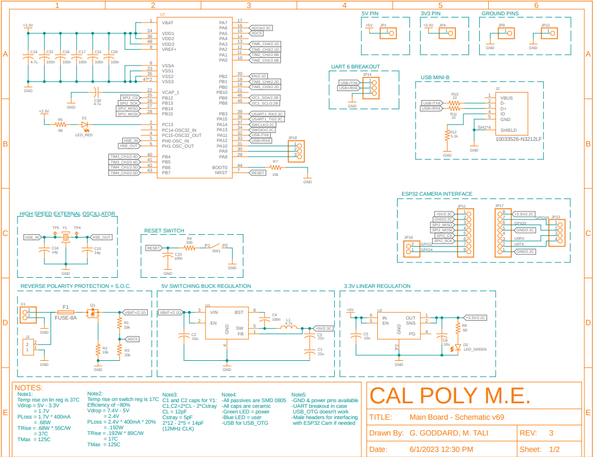
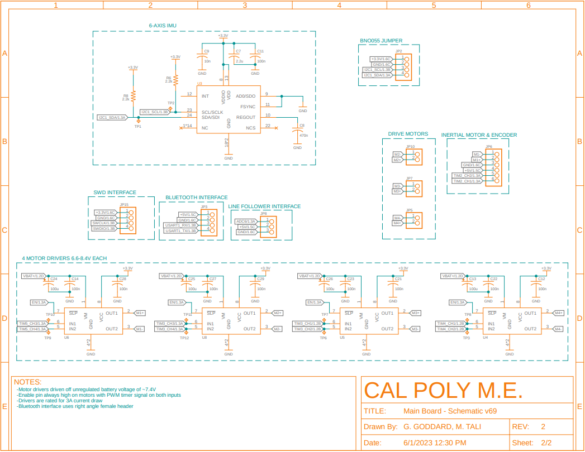
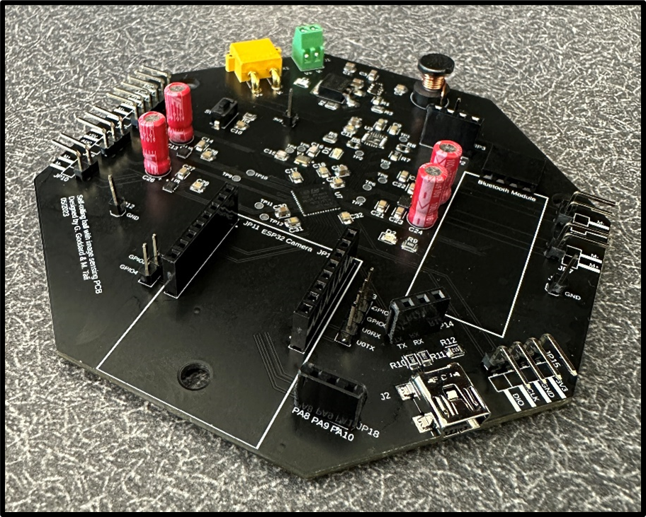
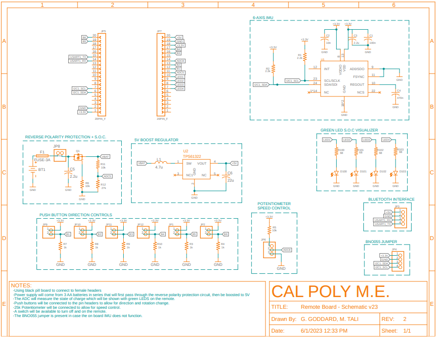
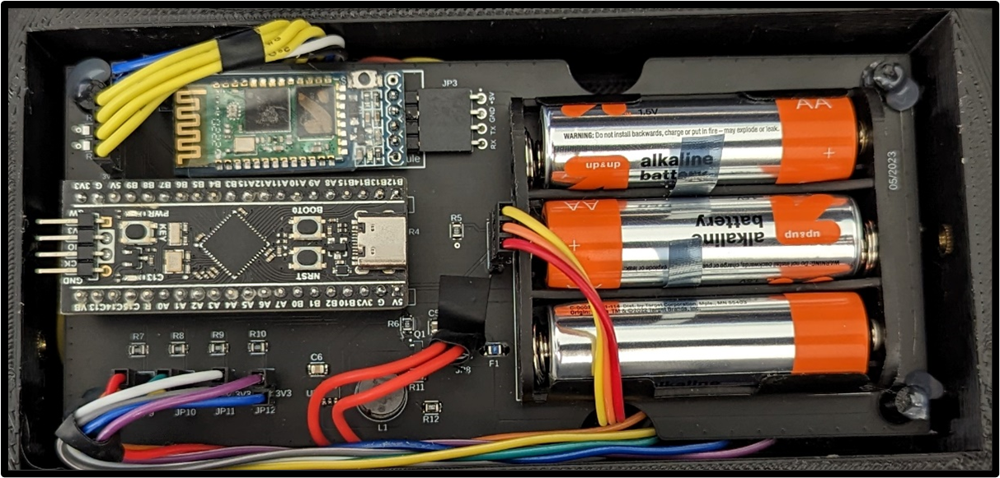

|
Self Rolling Ball Final
Design and build of a structure, PCB, and software interface to create a robot which can be commanded direction and magnitude to roll at.
|
|
Self Rolling Ball Final
Design and build of a structure, PCB, and software interface to create a robot which can be commanded direction and magnitude to roll at.
|
The main board was designed to use a 2s1p battery that would output a nominal 7.4V. The selected drive and inertial motors can run off anywhere from 6-12V. In addition to this, the bluetooth module we used along with the camera both required a 5V operating voltage. Seeing as the F411 needs a constant 3.3V logic, we needed two separate regulators. We set up a switching 5V regulator with an inductor to get our 5V rail. This 5V rail powered the bluetooth module and the camera. Next, the 5V regulated voltage fed into the 3.3V linear regulator. The output of this regulator fed all the logic requirements of our circuit. The motors were all driven off of polarity protected, but unregulated battery voltage as we don't need an overly stable supply for our motors. In addition to the power considerations. we also used many forms of communication - all which functioned properly. Those were: data transfer over USB with Virtual Com Ports, UART, I2C, SPI, and timer channels. A serial wire debug interface was also provided to allow for easy code flashing and debugging. 

The PCB in the above image goes by the name of “Main Board” in our design. This board has the F411 chip on it which helps run all the peripherals including Bluetooth, IMU, Camera, Wifi, Motors, and USB. This board lives inside of the robot and acts as the main controller of this design. This PCB communicates directly with the “Remote Board” PCB over Bluetooth to integrate user interactions with robot movement. The design and build of this board was almost entirely perfect for our application. We did not run into any issues in soldering, component selection, or design and the PCB worked perfectly out of the box. We initially planned for this board to have a 6-Axis IMU on it, however, after attaining more knowledge about IMUs, we realized we would need to use a 9-Axis IMU, thus, the imu pads were left unsoldered and the female pin headers for the SCL and SDA lines were connected to the BNO055 IMU instead. Going through the project we found a few changes we wanted to see made. Firstly, we wanted the inclusion of an on/off switch so we could remove power from the board when the battery was plugged in and it was not in use. The second change we wanted to see was better mounting hole placement. The mounting holes were placed after all the components were placed which forced them to be in odd locations.

For the remote board, we decided to run everything off a AA battery pack with 3 batteries in series, giving us a nominal voltage of 4.5V. Seeing as this circuit would draw low current, we figured the cleanest and easiest way to power was with the 3 AA batteries. With the black pill needing 5V to operate, we had to set up a boost converter to get the 4.5->5V. In addition to the power requirements, we created a female receptacle for the black pill so as to not have to "remake" the functionalities as we were only using this board to poll ADCs and read/toggle GPIOs.

The image above shows an image of our “Remote Board”. This board has female headers that will match the male headers of a Black Pill. In order to supply the Black Pill with the proper power, we used a battery pack with 3 AA batteries in series to get 4.5V. This supply was then sent through a boost regulator and boosted to 5V for the Black Pill. Again, there were no issues with this board and everything worked out of the box. We had two design changes we wanted to see for this board. Firstly, the board was over 4 inches in length which added an extra charge to our PCB order that could have been easily avoided with some rearranging of components. Secondly, when the black pill was plugged in, the USB-C adapter was too close to the battery pack which meant we would have to remove the Black Pill if we wanted to provide power over USB.
